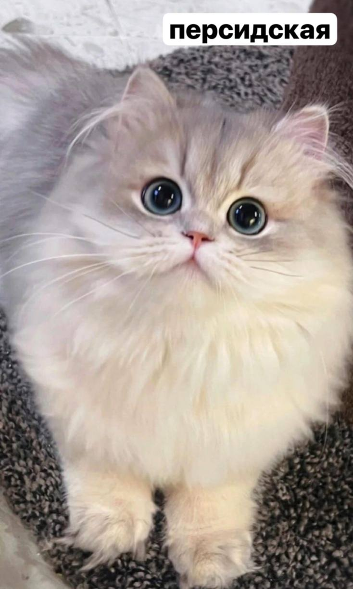

Самые популярные породы котиков
Самые популярные породы котиков

Кошки — удивительные животные с уникальной анатомией и поведением: они видят в темноте, могут прыгать в 5 раз выше своего роста и обладают гибким телом, позволяющим проникать в узкие пространства. Они используют мяуканье в основном для общения с людьми, а не друг с другом, и их отпечаток носа так же уникален, как отпечатки пальцев человека. Кошки играют важную роль как компаньоны и домашние лекари, снижая уровень стресса и кровяное давление у своих владельцев

Это Пухля из Гравити Фолз.
В честь него я назвала свою кошку. Её фото справа
Ссылки на источники:
Милые кошечки
Пухля
Написать письмо